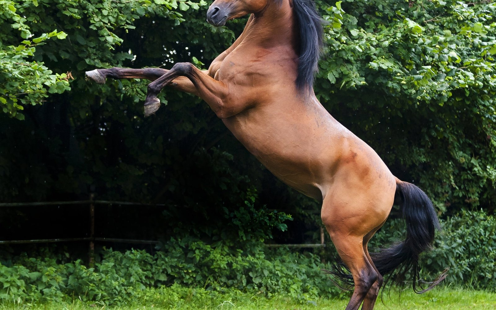
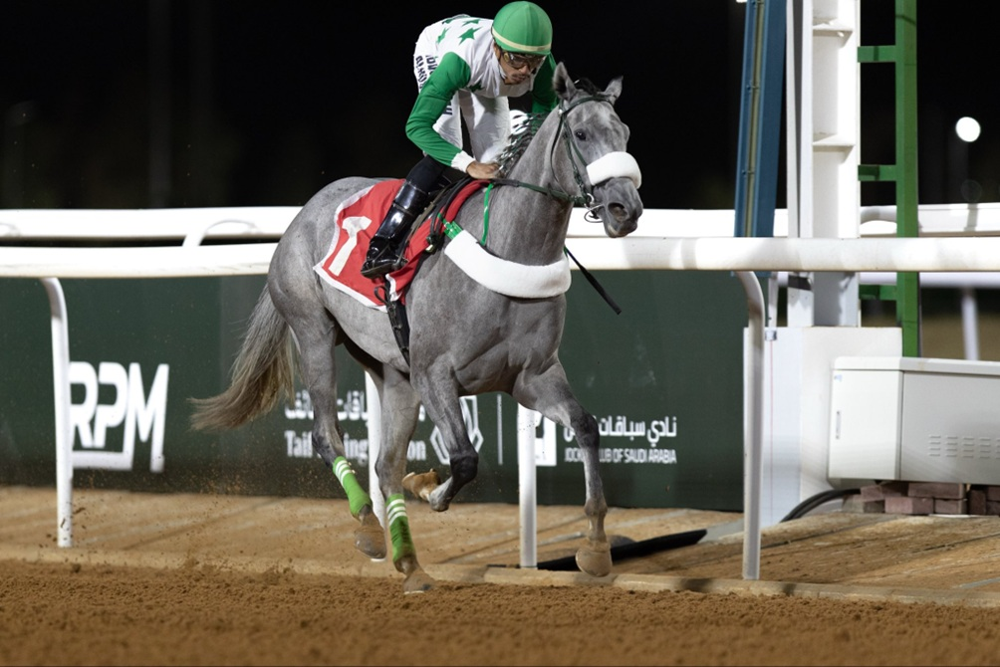
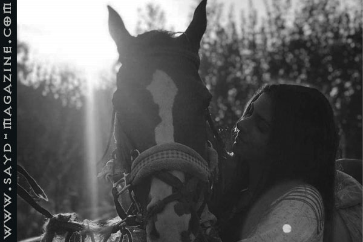

الصمتُ الذي يتكلّمه الخيل
مقال أدبي عن محبّي الخيل الحقيقيين: طقوس الفجر، الحرّ معلّمًا، والحضور في الركوب بلا وجهة. من باب الفروسية في مجلة صيد.

مقال أدبي عن محبّي الخيل الحقيقيين: طقوس الفجر، الحرّ معلّمًا، والحضور في الركوب بلا وجهة. من باب الفروسية في مجلة صيد.

اختُتم موسم سباقات الطائف مساء السبت 26 أيلول 2026 على ميدان الملك خالد، بعد أمسيتين بلغت جوائزهما الإجمالية 6.2 ملايين ريال، وشهدتا تتويج أبطال أبرز كؤوس الموسم.

الفروسية لا تخضع لمشيئة العمر بل لمشيئة حُبّ التحدي والإرادة القوية.. ولهذا هي نوع من حسابٍ خاص بمُعادلات خاصّة، تُحقّق أهدافها بقفزة ضوء.. لين عراجي بطلة فروسية بتوقيع لبناني وبط…